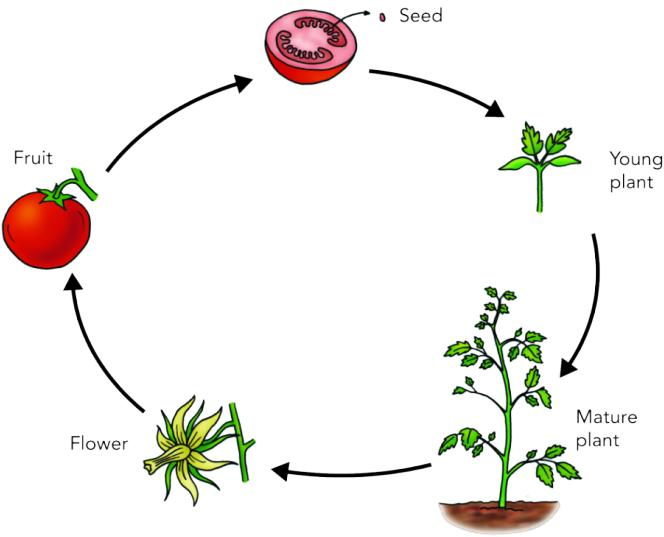
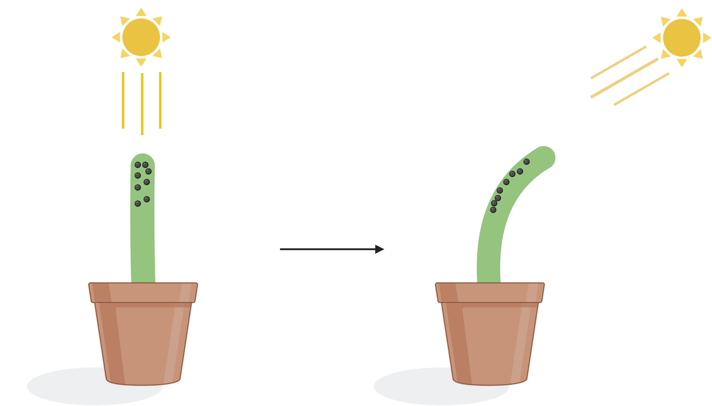
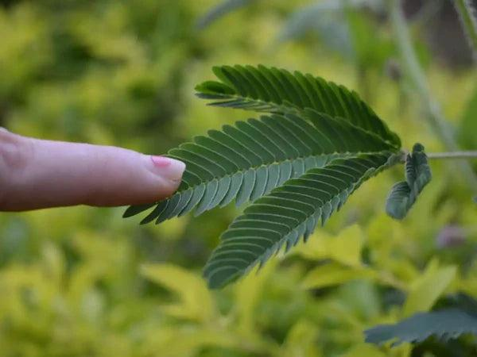
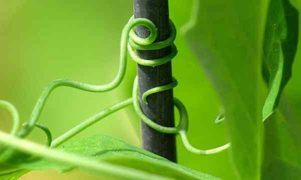
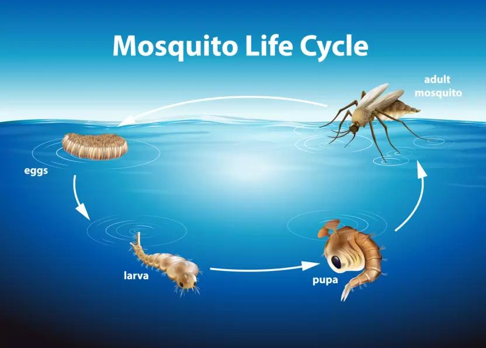

📘 Chapter 10: Living Creatures – Exploring Their Characteristics: Questions and Answers
1. Choose the Correct Answer
Question 1. __________ involves exchange of gases.
- Respiration
- Nutrition
- Excretion
- Reproduction
Answer: (a) Respiration.
Question 2. Which of the following is made of cells?
- Plant
- Iron
- Paper
- Balloon
Answer: (a) Plant.
Question 3. Which of the following statements is incorrect about non-living things?
- Non-living things grow externally.
- Non-living things cannot move on their own.
- Non-living things reproduce.
- Non-living things do not respond to stimuli.
Answer: (c) Non-living things reproduce.
Question 4. Which of the following is essential for the germination of a seed?
- Carbon dioxide
- Oxygen
- Sound
- Fertiliser
Answer: (b) Oxygen.
Question 5. Which of the following is not a stage in the life cycle of a mosquito?
- Egg
- Larva
- Pupa
- Embryo
Answer: (d) Embryo.
2. Write True or False. Also, Rectify the Incorrect Statements.
Question 1. Water and plastic are non-living things.
Answer: True.
Question 2. Living things produce oxygen as a by-product during respiration.
Answer: False. Green plants produce oxygen as a by-product during photosynthesis, not respiration.
Question 3. Both plants and animals can prepare their own food.
Answer: False. Green plants prepare their own food by photosynthesis. Animals depend on plants or other animals for food.
Question 4. Oxygen is required for the germination of seed.
Answer: True.
Question 5. Mosquitoes lay their eggs on stagnant water.
Answer: True.
3. Match the Columns
| Column A | Column B | Correct Match |
|---|---|---|
| 1. Involved in exchange of gases in plants | (d) Stomata | 1 – (d) |
| 2. Removal of wastes | (e) Excretion | 2 – (e) |
| 3. Folding of leaves on touching | (a) Touch-me-not plant | 3 – (a) |
| 4. Carrier of diseases | (b) Mosquito | 4 – (b) |
| 5. Required for seed germination | (c) Water | 5 – (c) |
4. Classify the Following Things into Living and Non-Living
| Thing | Classification |
|---|---|
| 1. Air | Non-living |
| 2. Butterfly | Living |
| 3. Clouds | Non-living |
| 4. A mango growing on a tree | Living |
| 5. An ice cream | Non-living |
5. Identify the Stimuli and Responses in Each Case
| Situation | Stimulus | Response |
|---|---|---|
| 1. Growth of stem upwards | Light | Stem grows upwards towards light. |
| 2. Melting of an ice cream | Heat | Ice cream melts. |
| 3. Wearing warm clothes in winter | Cold temperature | We wear warm clothes. |
| 4. Watering of the mouth during lunch | Sight or smell of food | Saliva is produced. |
| 5. Running away from a dog | Seeing a dog or feeling afraid | We run away. |
6. Define the Following Terms
Question 1. What is growth?
Answer: Growth is the process by which living things increase in size and develop over time.
Question 2. What is reproduction?
Answer: Reproduction is the process by which living things produce young ones of their own kind.
Question 3. What are stimuli?
Answer: Stimuli are changes in our surroundings that cause a response in living things.
Question 4. What is germination of a seed?
Answer: Germination is the process by which a seed starts growing into a new plant under suitable conditions.
Question 5. What is a life cycle?
Answer: A life cycle is the series of stages through which a living organism passes during its life, from birth to adulthood and reproduction.
7. Answer the Following Questions Briefly
Question 1. Do plants undergo excretion? If yes, how?
Answer: Yes, plants also undergo excretion. They remove or store waste materials in different ways:
- Some wastes are stored in leaves, bark and fruits.
- Some wastes are released through stomata.
- Some wastes are stored in the form of gums and resins.
- Some wastes are removed when leaves fall off.
Question 2. Explain how movement in plants is different from movement in animals.
Answer:
| Movement in Plants | Movement in Animals |
|---|---|
| Plants usually remain fixed in one place. | Animals can move from one place to another. |
| Plant movements are generally slow. | Animal movements are generally faster. |
| Plants move parts such as leaves and stems. | Animals move their whole bodies or body parts. |
| Example: A stem growing towards sunlight. | Example: A dog running. |
Question 3. What will be the direction of the root if the plant receives sunlight from the south direction?
Answer: Roots generally grow downwards due to gravity and away from light. Therefore, the root grows downwards and away from the light coming from the south.
Question 4. Name the factors affecting the germination of a seed.
Answer: The main conditions required for seed germination are:
- Water or moisture.
- Oxygen (air).
- Suitable temperature or warmth.
Question 5. Explain the life cycle of plants.
Answer: A plant passes through different stages during its life cycle:
- Seed: A new plant begins its life as a seed.
- Germination: The seed gets water, oxygen and suitable warmth. It starts growing.
- Seedling: A small plant with roots, stem and leaves develops.
- Mature Plant: The plant grows bigger and becomes mature.
- Flowering and Fruiting: The mature plant produces flowers and fruits.
- Seed Formation: New seeds are formed and can grow into new plants.

8. Answer the Following Questions in Detail
Question 1. Explain growth in living things. How is it different from non-living things?
Answer: Growth is an important characteristic of living things. It is the process by which living organisms increase in size and develop over time.
Growth in Living Things
- Plants grow from seeds into large plants.
- Animals grow from young ones into adults.
- Human beings grow from babies into adults.
- Living things grow because their cells increase in number and size.
Growth in Non-Living Things
Non-living things do not grow by themselves. Their size may increase when other materials are added to them.
For example, a pile of sand becomes bigger when more sand is added. But this is not biological growth.
| Living Things | Non-Living Things |
|---|---|
| They grow naturally. | They do not grow by themselves. |
| Their growth takes place from within. | Their size may increase by adding materials from outside. |
| Their cells divide and increase in number. | They do not have living cells. |
| Example: A growing plant. | Example: A pile of stones. |
Conclusion: Living things grow naturally from within, while non-living things cannot grow by themselves.
Question 2. Are growth and reproduction the same? Explain in detail.
Answer: No, growth and reproduction are not the same. They are two different characteristics of living things.
Growth
Growth is the process by which a living organism increases in size and develops.
Examples:
- A small plant grows into a big plant.
- A baby grows into an adult.
- A young puppy grows into a dog.
Reproduction
Reproduction is the process by which living organisms produce young ones of their own kind.
Examples:
- A hen lays eggs that hatch into chicks.
- A dog gives birth to puppies.
- A plant produces seeds that grow into new plants.
| Growth | Reproduction |
|---|---|
| It increases the size of an organism. | It produces new organisms. |
| It takes place during the development of an organism. | It helps continue the species. |
| It does not produce a new individual. | It produces new individuals. |
| Example: A seedling growing into a tree. | Example: A plant producing seeds. |
Conclusion: Growth makes an individual bigger, while reproduction produces new individuals of the same kind.
Question 3. Differentiate between breathing and respiration.
Answer: Breathing and respiration are related processes, but they are not the same.
Breathing
Breathing is the physical process of taking in oxygen-rich air and giving out carbon dioxide-rich air.
Respiration
Respiration is the process in which food is broken down inside cells to release energy.
| Breathing | Respiration |
|---|---|
| It is a physical process. | It is a chemical process. |
| It involves taking in oxygen and giving out carbon dioxide. | It releases energy from food. |
| It takes place through breathing organs. | It takes place inside cells. |
| It does not directly release energy from food. | It releases energy from food. |
Conclusion: Breathing helps in the exchange of gases, while respiration releases energy from food.
Question 4. Plants also show movement. Explain in detail.
Answer: Yes, plants also show movement. Although most plants cannot move from one place to another, their different parts show movement in response to stimuli.
1. Movement Towards Sunlight
The stem of a plant generally grows towards sunlight. This helps the plant get light for photosynthesis.

2. Movement of Roots
Roots generally grow downwards towards gravity and towards water in the soil.
3. Touch-me-not Plant
The leaves of the touch-me-not plant fold when someone touches them.

4. Movement of Sunflower
Sunflower heads show movement in response to sunlight, especially during their young stage.
5. Movement of Tendrils
The tendrils of climbing plants coil around nearby supports when they touch them.

Conclusion: Plants show movement in response to light, water, gravity and touch. These movements help them survive and grow.
Question 5. Explain the life cycle of mosquitoes in detail with the help of a diagram.
Answer: A mosquito passes through four main stages during its life cycle. This process is called complete metamorphosis.
1. Egg
- A female mosquito lays eggs on or near stagnant water.
- The eggs hatch after some time.
2. Larva
- The eggs hatch into larvae.
- Larvae live in water.
- They feed on tiny organisms and organic matter.
- They come to the water surface to breathe.
3. Pupa
- The larva changes into a pupa.
- The pupa lives in water.
- During this stage, the mosquito develops into an adult.
4. Adult Mosquito
- An adult mosquito comes out of the pupa.
- It flies away and grows into a mature mosquito.
- The female mosquito lays eggs, and the life cycle begins again.

Conclusion: The life cycle of a mosquito has four stages: Egg, Larva, Pupa and Adult. Mosquitoes usually breed in stagnant water.
9. Additional Important Questions and Answers
Question 1. What are living things?
Answer: Living things are organisms that perform life processes such as nutrition, respiration, growth, movement and reproduction.
Question 2. What are non-living things?
Answer: Non-living things are things that do not perform life processes. Examples are stones, water, air and plastic.
Question 3. What is nutrition?
Answer: Nutrition is the process by which living organisms obtain and use food for energy, growth and repair.
Question 4. What is respiration?
Answer: Respiration is the process of breaking down food inside cells to release energy.
Question 5. What is excretion?
Answer: Excretion is the process of removing waste materials from the body of a living organism.
Question 6. What is reproduction? Why is it important?
Answer: Reproduction is the process by which living organisms produce young ones of their own kind. It is important because it helps continue their species.
Question 7. What are the basic conditions needed for seed germination?
Answer: A seed needs water, oxygen and a suitable temperature to germinate.
Question 8. What is a stimulus? Give an example.
Answer: A stimulus is a change in the surroundings that causes a response in an organism. For example, the leaves of a touch-me-not plant fold when touched.
Question 9. What is a response?
Answer: A response is the reaction of a living organism to a stimulus.
Question 10. Why do plants need sunlight?
Answer: Plants need sunlight to prepare their food through photosynthesis.
Question 11. What are stomata?
Answer: Stomata are tiny pores, mostly present on the surface of leaves. They help in the exchange of gases and the loss of water vapour.
Question 12. Why do mosquitoes lay eggs in stagnant water?
Answer: Mosquitoes lay eggs in stagnant water because their larvae and pupae develop in water.
Question 13. Name the four stages of the mosquito life cycle.
Answer: The four stages are:
- Egg
- Larva
- Pupa
- Adult mosquito
Question 14. How do plants remove waste materials?
Answer: Plants remove or store waste materials through leaves, bark, roots and other parts. Some wastes are released through stomata, while others are stored as gums and resins.
Question 15. Why are mosquitoes harmful to human beings?
Answer: Some mosquitoes spread diseases such as malaria, dengue and chikungunya. Therefore, we should prevent mosquito breeding.
Question 16. How can we prevent the breeding of mosquitoes?
Answer: We can prevent mosquito breeding in the following ways:
- Do not allow water to collect in open containers.
- Keep water tanks covered.
- Clean coolers and flower pots regularly.
- Keep drains and surroundings clean.
- Remove stagnant water from nearby areas.
10. Quick Revision – Important Points
- All living things are made up of cells.
- Living things need food for energy and growth.
- Respiration releases energy from food.
- Breathing involves the exchange of gases.
- Excretion removes waste materials from the body.
- Reproduction produces new organisms of the same kind.
- Living things grow naturally from within.
- Plants also show movement in response to stimuli.
- Stomata help in the exchange of gases in plants.
- Touch-me-not leaves fold when touched.
- Seeds need water, oxygen and suitable warmth to germinate.
- A plant life cycle begins with a seed.
- The mosquito life cycle has four stages: Egg, Larva, Pupa and Adult.
- Mosquitoes usually lay eggs in stagnant water.
- We should keep our surroundings clean to prevent mosquito breeding.
11. Chapter Summary
Living things have many characteristics that make them different from non-living things. They are made up of cells and perform life processes such as nutrition, respiration, growth, movement, excretion and reproduction.
Plants and animals show growth and movement in different ways. Plants respond to stimuli such as light, water, gravity and touch. Seeds germinate when they get water, oxygen and suitable warmth. Plants and animals also have different life cycles. The mosquito passes through four stages: egg, larva, pupa and adult.
Message of the Chapter
All living creatures have special characteristics and life processes. We should understand them and protect living organisms and their environment.
MCQ Quiz
अध्याय के वस्तुनिष्ठ प्रश्नों का अभ्यास करें।
MCQ Quiz शुरू करेंPDF Notes
इस अध्याय के नोट्स PDF में पढ़ें या डाउनलोड करें।
📄 View PDF ⬇️ Download PDF